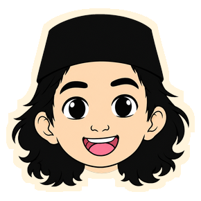

Kuis Kelas 5
Ketuk layar untuk mode layar penuh
Bersiap
Ketuk jawaban yang kamu pilih
20
Ketuk jawaban yang kamu pilih
Hasil soal ini
Skor sementara
Halo! Siapa namamu?
Namamu akan muncul di rapor skor
Ayo main ▶
Utama
Musik latar
Efek suara